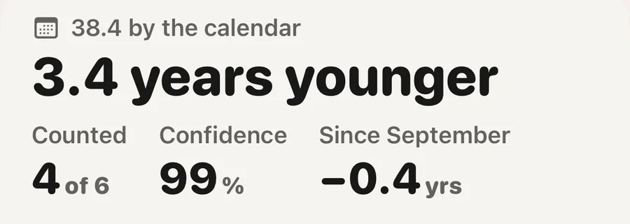

Comparison · Apple Watch apps

All three read your Apple Watch through Apple Health, and each is built around something different. Bevel is the widest: recovery, strain, sleep, nutrition, a biological age and a chat coach, with a free tier and Pro at $99.99 a year. Athlytic is the leanest: a morning recovery score from your HRV and resting heart rate, worked out on the phone, in English, with Pro at $29.99 a year. Aera is built to show its work: a body age that shows each part's share, sleep and runs set against your own usual, a 3D replay of your runs, and a note behind every number. It needs no account, speaks German and Hungarian, and Premium is $39.99 a year.
Bevel (App Store name: Bevel: AI Health Coach) puts many scores in one app: Recovery, Sleep, Strain, Stress and an Energy Bank, plus food logging, strength workouts and a Biological Age that, in its own words, uses "key health markers like sleep, activity, resting heart rate, and more". Its chat coach, Bevel Intelligence, answers questions about your data and runs on credits, with extra packs for sale. It reads Apple Health and also links Garmin Connect and Google Health devices such as Fitbit, and it can import health records such as lab results.
The core app is free, and Bevel Pro is $14.99 a month or $99.99 a year. It has an account (its settings show your account email). Its App Store privacy label lists health data as not linked to you, and lists contact details, identifiers and usage data as linked. It comes in English and 12 more languages, German among them.
Athlytic (App Store name: Athlytic: Fitness & Recovery) is built around one morning question. It reads your overnight HRV and resting heart rate against your own baseline and gives a recovery score, next to sleep, stress and your workouts. Recent versions added Athlytic Age, "one number for your fitness" from resting heart rate, VO2 max, sleep and body composition, a Workout Replay that plays a run, ride or hike back on the map, and Ask Athlytic, which answers questions with Apple Intelligence.
Pro is $4.99 a month or $29.99 a year, with a one-week trial. Its privacy page says it works everything out on the device, and its App Store label says the developer collects no data. It is in English only, and Apple Watch is needed for most features.
Aera is built to explain. Its body age shows how many months or years each part adds or takes off, and every number, from sleep score to strain, opens a short note on how it was worked out and where it stops being reliable, with sources. Sleep, recovery, stress and training are read against your own usual. Runs, walks and rides with a GPS route replay in 3D over the real ground with pace, heart rate and climb, and there is a route planner and a blood pressure report for your doctor. There is no chat coach.
There is no account, and its App Store privacy label lists no health data. Polar links directly, and Garmin or Strava exports can be imported. Today's scores with their last 30 days are free; Premium, for older history, video and more, is $8.99 a month or $39.99 a year, with a one-time option too. It comes in ten languages, German and Hungarian among them.

A note behind every numberEach score opens a short article on how it was worked out and where it stops being reliable, with the studies behind it.
| Bevel | Athlytic | Aera | |
|---|---|---|---|
| Built around | Everything in one place, with a chat coach | A morning recovery score | Showing its work: every number explained |
| Biological age | Biological Age, from sleep, activity, resting heart rate and more | Athlytic Age, from resting heart rate, VO2 max, sleep and body composition | Body age, each part's share shown in months or years |
| Recovery | Recovery score | Recovery score, the heart of the app | Recovery score, each overnight reading against your usual |
| Chat about your data | Bevel Intelligence, on credits | Ask Athlytic, with Apple Intelligence | None; a written note behind each number |
| Replay a run | Not listed | Workout Replay on the map | 3D replay over the real ground |
| Account | Yes | None mentioned | None |
| Privacy label | Health data not linked to you; contact details, identifiers and usage linked | Data not collected | No health data; purchases, device ID, usage and crash data |
| Languages | English and 12 more, incl. German | English | 10, incl. German and Hungarian |
| Price (US, 16 Nov 2026) | Free core; Pro $14.99/mo or $99.99/yr; coach credits from $4.99 | Pro $4.99/mo or $29.99/yr; 1-week trial | Free core; Premium $8.99/mo or $39.99/yr, or pay once |
All three can be tried for free first, and all three read the same Apple Health data, so you can switch without losing anything.

Body age beside your calendar ageHow far your body age sits from your calendar age, how many parts count, and how sure Aera is.
Aera, for iPhone and Apple Watch
Aera works out your body age, sleep, stress and training load on your iPhone from Apple Health, sets each against your own usual, and explains every number. There is no account. Body age is an estimate for everyday wellbeing, not a medical age. Aera is not a medical device.
The core of Bevel is free. Bevel Pro is $14.99 a month or $99.99 a year in the US App Store (16 November 2026), and extra chat coach credits are sold in packs from $4.99.
Athlytic's App Store page mentions no account, its privacy page says it works everything out on the device, and its privacy label says the developer collects no data.
Bevel and Aera have German in the app. Athlytic is in English only. Aera also has Hungarian.
Athlytic's Workout Replay plays a run, ride or hike back on the map. Aera replays runs, walks and rides with a GPS route in 3D over the real ground. Bevel's App Store page lists no replay.
Related guides: Apple Health Age or Aera · Sleep and training on Apple Watch without a subscription · What does a biological age from your watch mean?
 Or scan with your iPhone
Or scan with your iPhoneFree to start. No account. Works with the watch you already wear.